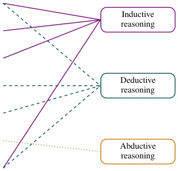
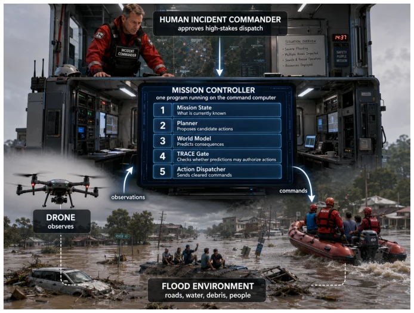
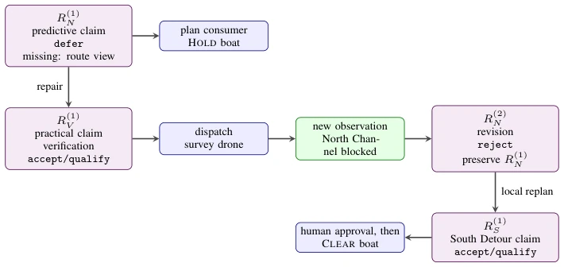

这篇论文没打算造个更聪明的机器人，而是给 AI 写个“记账本”。作者 Edward Chang 团队直言不讳：LLM 本质是关联，不是推理。CoT 和 RL 只是打补丁，解决不了因果缺失。TRACE 是个版本化 JSON 模式，强制要求“无记录不变更”。亮点是它把苏格拉底问答、图灵测试、因果阶梯都变成了字段和测试，让推理可审计。槽点是它自称“操作接口”却连个像样的基准测试都没给，洪水救援例子只是 illustrative 而非 empirical。这就像给赛车装了个黑匣子，但没证明车跑得更快。不过，在 Agent 系统里，能审计的“错误”总比不可解释的“幻觉”强，至少知道哪里该背锅。
This paper does not intend to build a smarter robot, but rather write an "account book" for AI. The author Edward Chang team is forthright: LLM essence is association, not reasoning. CoT and RL are merely patches, unable to resolve causal deficits. TRACE is a versioned JSON schema, mandating "no change without record". The highlight is that it transforms Socratic questioning, Turing tests, and causal ladders into fields and tests, rendering reasoning auditable. The drawback is that it claims to be an "operating interface" yet provides no decent benchmark test; the flood rescue example is merely illustrative rather than empirical. This is akin to installing a black box in a race car, without proving the car runs faster. However, in Agent systems, auditable "errors" are superior to unexplainable "hallucinations", at least knowing where the blame lies.
Existing LLM reasoning faces a triple dilemma. At the first layer mechanism-wise, autoregressive models only compute associations and cannot distinguish causality (Kıcıman et al. [2024]). At the second layer patch-wise, CoT and RL merely mimic reasoning text and cannot pass formal verification (Chen et al. [2025c]). At the third layer theoretically, formal reasoning tools such as the Socratic method and Pearl's causal ladder are absent in models (Pearl [2009]). This results in Agent decisions being un-auditable and state changes lacking documentation. Chang [2023b] and Chang [2024] have already pointed out the need for structured records, but lack a unified standard. This paper aims to fill this gap, using the TRACE schema to transform the reasoning process from "black box text" to "white box data", ensuring every commitment has an evidence chain, and solving accountability and fixability issues in Agent systems.

Figure 1: The Socratic methods and the IDA mapping: each of the seven methods drawn to the classical family or families it exercises (solid, inductive; dashed, deductive; dotted, abductive). The view is deliberately coarse: Table 4 refines it with the defeasible, legal-evidentiary, causal, and practical families, and a method can invoke more than one family, as hypothesis elimination is deductive in form (refutation) and abductive in function (narrowing the hypothesis set). No method maps to a causal family: the tradition supplies testing procedures but no causal type system, the gap Pearl’s ladder fills in Section 4.4.
The core is the TRACE Schema and an eight-stage Writer. The schema defines TraceRecord, containing declarations, evidence, and causal fields, versioned and immutable. The Writer converts raw text into records, passing through eight stages (such as declaration gating, evidence audit, causal ladder testing). Reasoning is layered into four levels: declaration type, reasoning family, argument scheme, and context value. The key innovation is the "Consumer Contract"; records are guaranteed tamper-proof, and consumers promise "Fail Closed", meaning no action is executed without a record. The causal part introduces Pearl's causal ladder, checking do(x) and identifying states. The entire system adheres to the discipline of "no persistent state change without a TRACE record", ensuring every decision is traceable. Additionally, the Writer algorithm supports append-only revisions, tracking corrections via revision_history to avoid state mutations. Consumers such as Mnemosyne and MACI utilize records for memory admission and plan gating, achieving closed-loop learning.

Figure 3: The flood search-and-rescue setting for the vignette. A single Mission Controller runs the mission state, planner, predictive world model, TRACE gate, and action dispatcher on the command computer; a survey drone supplies observations; a rescue boat executes an authorized dispatch; and a human Incident Commander approves high-stakes actions. TRACE neither flies the drone nor drives the boat: it audits, at the gate, whether a prediction may authorize an irreversible dispatch. The scene is illustrative and the consequences are simulated. The scene is an AI-generated illustration.

Figure 4: From prediction to attributable action. A defer names an information-gathering repair; the repair has its own record; new evidence creates an append-only revision; and a later record licenses a different route. TRACE neither supplies the planner nor controls the drone or boat. It records the justificatory boundary through which their outputs become durable commitments.
实验Experiments
本文明确声明不是性能论文，无实证结果。主要提供两个 worked examples：音乐课辩论和洪水搜救。音乐课示例展示 Writer 如何将句子转为类型化裁决；洪水示例展示预测模型置信度与证据冲突时，TRACE 如何触发 defer 和观测修复。TRACE-Bench 协议定义了基准，但收敛性验证留待未来。虽然缺乏量化指标，但通过附录中的成本模型和算法展示了可行性。对于追求可解释性的 Embodied AI 系统，这种“审计优先”的思路比盲目追求准确率更务实，尽管目前还停留在理论框架阶段。附录 D 展示了临床和政策场景的实例，进一步验证了模式在不同风险等级下的适用性，但尚未在真实机器人环境中验证。
This paper explicitly states it is not a performance paper and has no empirical results. It mainly provides two worked examples: a music class debate and flood search and rescue. The music class example demonstrates how the Writer converts sentences into typed rulings; the flood example demonstrates how TRACE triggers defer and observational repair when prediction model confidence conflicts with evidence. The TRACE-Bench protocol defines the benchmark, but convergence validation is left for the future. Although lacking quantitative metrics, feasibility is demonstrated through the cost model and algorithms in the appendix. For Embodied AI systems pursuing interpretability, this "audit-first" approach is more pragmatic than blindly pursuing accuracy, although it currently remains at the theoretical framework stage. Appendix D presents instances of clinical and policy scenarios, further validating the schema's applicability under different risk levels, but it has not yet been verified in real robot environments.